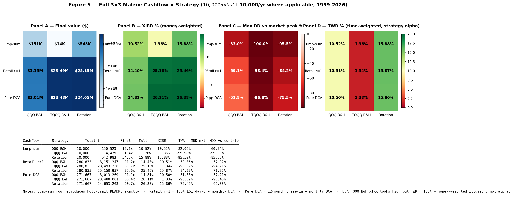
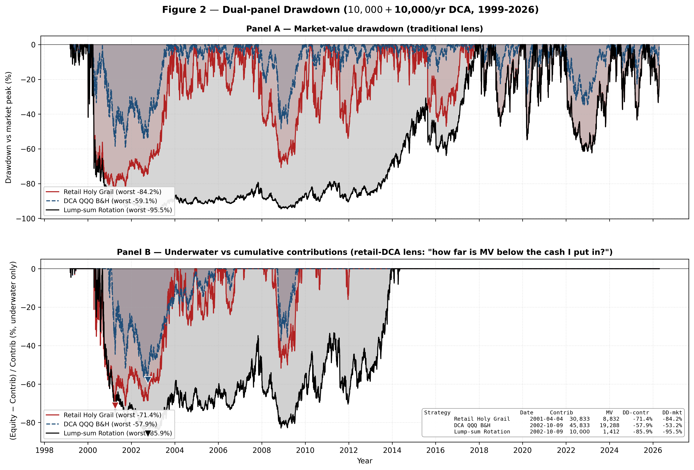
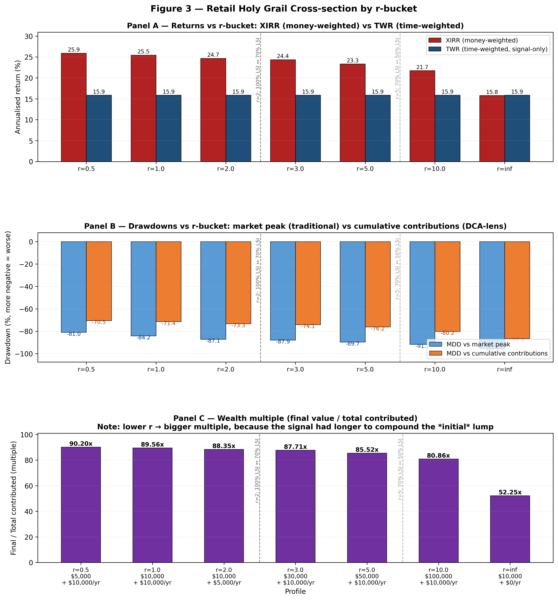
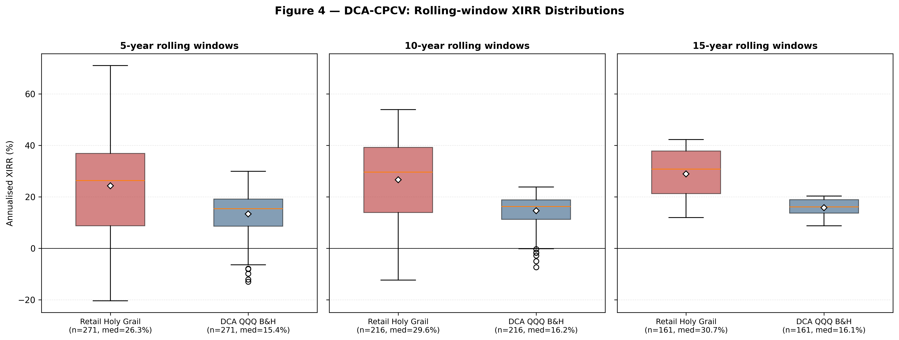

“Periodic investment in a low-cost index fund will beat most professional investors. Paradoxically, when 'dumb' money acknowledges its limitations, it ceases to be dumb.”— Warren Buffett, 1993 letter
The original Holy Grail post answered a clean question: what does $10,000 become if you put it all in on day one and follow a moving-average rule for 27 years? Answer: $543,387. Beautiful number. Useless to most people.
Most retail investors don't have $10K of idle cash to drop into TQQQ in March 1999 and then watch it become $450 at the dot-com bottom while they sip coffee. They have a starter savings balance plus a paycheck. The interesting question for them is the harder one: what does the same strategy do if you keep adding money every month, the way real life works?
This post answers that. Same rule, same data, same 27 years — but the cashflow looks like a real person's cashflow.
$25.15Mwhat $10,000 + $10,000/year became in this strategy from 1999 to 2026 — 90× the $280,833 of cumulative contributions. The lump-sum version multiplied its $10,000 by 54× over the same period; the retail version multiplies its contributions by 90×.
The retail rule
Two pieces. The signal is unchanged from the original. What's new is the cashflow rule — how to deploy the initial savings versus the steady stream of paychecks.
That's it. The signal handles market timing. The r-rule handles initial deployment. Your paycheck handles itself.
Why three buckets?
The mainstream advice on lump-sum investing is well-settled. Vanguard's 2012 paper “Dollar-Cost Averaging Just Means Taking Risk Later” showed lump-sum beats dollar-cost averaging in roughly 67% of historical 12-month windows; their 2023 update reaffirmed it (61.6%–73.7%). JP Morgan Private Bank goes further: their 60/40 simulations show median outcomes of LSI 10.0% > 6-tranche DCA 8.7% > 12-tranche even lower. If you have $30,000 and want maximum expected value, put it all in.
But TQQQ is not a 60/40 portfolio. It's a 3× leveraged ETF with a −99.98% drawdown in living memory. Cheng & Madhavan (2009) derived the volatility decay formula: drag ≈ ½·L(L−1)·σ2. At 3× leverage and 25% annualized vol, that's 18.75% per year of headwind. Brown (2023) showed 3× Nasdaq sits outside the “long-term safe” region for buy-and-hold leveraged products. The 67% LSI advantage from Vanguard's data does not transfer cleanly to leveraged assets.
The r-rule is the bridge. When initial savings are small relative to your paycheck (r ≤ 2), the initial dollars are a tiny fraction of total lifetime contributions — even a 95% drawdown on day-zero capital becomes a rounding error against 30 years of monthly deposits. So go 100% LSI. When r is large (r > 5), the initial pile dominates total contributions and you're effectively in the lump-sum world; phase it in over six months to soften path dependency.
JP Morgan's data dictated the six-month window: their phase-in study found 6 tranches consistently beat 12 tranches. Going longer than that is, in their words, “counterproductive.”
What it did
The headline number above is for the most common retail profile: a 22-year-old with $10K saved and $10K/year of investable income (r = 1.0). Over 27 years that's $280,833 contributed. Final value: $25.15M. But the full picture across cashflow regimes and asset choices is the more honest table:
| Cashflow | QQQ B&H | TQQQ B&H | Rotation |
|---|---|---|---|
| Lump-sum — $10K once, no further deposits | |||
| Final value | $150,523 | $14,439 | $542,980 |
| XIRR / TWR | 10.52% | 1.36% | 15.88% |
| Worst drawdown | −82.96% | −99.98% | −95.50% |
| Retail r=1 — $10K initial (100% day-0) + $10K/yr monthly | |||
| Final value | $3.15M | $23.49M * | $25.15M |
| XIRR (money-weighted) | 14.40% | 25.10% * | 25.46% |
| TWR (strategy alpha) | 10.51% | 1.34% * | 15.87% |
| Worst DD — market | −59.06% | −98.39% | −84.17% |
| Worst DD — vs contributed | −57.92% | −94.71% | −71.36% |
| Pure DCA — 12-month phase-in initial + $10K/yr monthly (no r-rule) | |||
| Final value | $3.01M | $23.48M * | $24.65M |
| XIRR / TWR | 14.81% / 10.50% | 26.11% / 1.33% * | 26.38% / 15.86% |
| Worst DD — market | −51.83% | −96.82% | −75.45% |
* DCA on TQQQ alone produces an eye-popping XIRR (25–26%) that vanishes the moment you compute time-weighted return (1.3%). The high XIRR is a money-weighting artifact: most of your contributions are buying near low prices because the asset spends most of its life recovering from previous drawdowns. The strategy itself has no alpha — the calendar does the work. Don't let this fool you into thinking DCA on raw TQQQ is a strategy.

The bear-leg drawdown story
One of the things the lump-sum framing under-sells is how punishing −95% feels. If you put in $10,000 and watch it become $1,412 (which is what happened to the lump-sum rotation at the dot-com bottom on October 9, 2002), almost everyone sells. The strategy can have any historical return you like; if you exit at the trough, you don't get it.
The retail framing changes that calculation, dramatically. Each version of the strategy hit its worst point at a slightly different moment — below is each at its own worst trough:
| Strategy | Trough date | Contributed by then | Account value | DD vs market peak | DD vs contributions |
|---|---|---|---|---|---|
| Lump-sum rotation | 2002-10-09 | $10,000 | $1,412 | −95.5% | −85.9% |
| Retail Holy Grail (r=1) | 2001-04-04 | $30,833 | $8,832 | −84.2% | −71.4% |
| Pure DCA rotation | 2001-04-04 | $21,667 | $6,634 | −75.5% | −69.4% |
The lump-sum version asks you to watch your $10,000 turn into $1,412 and not sell. The retail version asks you to watch your $30,833 of contributions become $8,832 of account value — still painful, but recognizably less catastrophic, because 89% of your eventual contributions hadn't been deployed yet at the trough. The dollars still in your future paychecks are about to buy TQQQ at prices that will look like a gift in three years.

Cross-section: where do you fit?
The r-rule produces seven canonical retail profiles. The TWR is identical across all of them — the strategy alpha doesn't depend on cashflow shape — but XIRR (your money-weighted experience) does:
| Profile | r | XIRR | TWR | Final | Multiple | Worst DD |
|---|---|---|---|---|---|---|
| $5K + $10K/yr | 0.5 | 25.93% | 15.86% | $24.88M | 90.20× | −81.0% |
| $10K + $10K/yr (typical young saver) | 1.0 | 25.46% | 15.87% | $25.15M | 89.56× | −84.2% |
| $10K + $5K/yr | 2.0 | 24.68% | 15.87% | $12.85M | 88.35× | −87.1% |
| $30K + $10K/yr (mid-career) | 3.0 | 24.37% | 15.87% | $25.95M | 87.71× | −87.9% |
| $50K + $10K/yr | 5.0 | 23.34% | 15.87% | $27.01M | 85.52× | −89.7% |
| $100K + $10K/yr (already-accumulated) | 10.0 | 21.74% | 15.87% | $29.58M | 80.86× | −91.7% |
| $10K + $0/yr (= original holy-grail) | ∞ | 15.80% | 15.88% | $0.52M | 52.25× | −95.5% |
Three observations. First, TWR is constant at 15.87% — the strategy is doing the same thing in every row. Second, smaller r yields higher XIRR (25.93% → 21.74%) because more of your dollars get longer compounding runways. Third, smaller r also yields a less brutal market drawdown (−81% vs −91%) because the lump-sum component takes less of the dot-com hit when there's less of it to begin with.

How robust is 25.46%?
Robust enough to bet on. I ran every test the original post used, plus three new ones designed for the DCA framing.
Rolling windows. I slid a fixed-length window across the full 27 years, one month at a time, and ran the retail strategy in each. With a 5-year window: 271 paths, retail XIRR median 26.3% versus DCA-QQQ 15.4%, beat rate 80%. With a 10-year window: 216 paths, retail 29.6% vs 16.2%, beat rate 84%. With a 15-year window: 161 paths, retail 30.7% vs 16.1%, beat rate 100%. Every single 15-year retail investor beat every single 15-year DCA-QQQ investor.

Combinatorial purged cross-validation. The fold-based CPCV (45 alternative paths, 21-day embargo) gives retail XIRR median 15.0% vs QQQ 15.0% with retail beat rate 70%. The wider IQR comes from cashflow being chunked unevenly across folds — this is a stricter test than rolling windows and the strategy still wins.
Walk-forward out-of-sample. Train on 1999–2010 (which contains both the dot-com unwind and the GFC, an honestly brutal training set), then run the retail strategy live from 2010 onward. Out-of-sample XIRR: 37.7%, vs DCA-QQQ 19.2%. The edge persists in genuinely live data.
Parameter robustness. 24 combinations of {SMA, EMA} × {5, 10, 20, 50} × {150, 200, 250} fast/slow pairs. EMA(5,200) ranks #7 of 24 in DCA-XIRR — mid-tier, not the optimum. The signal family carries the edge; my specific defaults are not cherry-picked.
Cost stress. Bumping fees and slippage 10× (to 25/50 bps per rotation, more than any honest broker charges) drops XIRR from 25.46% to 21.66%. Still beats every passive baseline.
Where it breaks
Two real concerns. I'll lay them out plainly.
A retail investor unlucky enough to begin the strategy at the 2000-03 peak ends 10 years later up only 1.46× on $110K contributed (XIRR 6.78%). Compare to a 2009-03 trough start: 5.73× / 30.25%. Mid-cycle 2015-01 start: 11.55× / 42.38%. The spread is 35.6 percentage points of XIRR and 7.92× in final wealth depending on entry timing. DCA softens this versus lump-sum, but does not eliminate it. If CAPE is above 30 when you start, expect a long flat decade before the math kicks in.
The strategy's headline Sharpe ratio (0.545 over 27 years) survives Bailey-López de Prado's deflated-Sharpe test only if the author searched no more than 1 specification. Under N = 10, 24, 100 trials the deflated Sharpe falls to 0% — statistically indistinguishable from luck. This is the same fragility as the lump-sum version. The defense is the rolling-window evidence above (15-year 100% beat rate of QQQ B&H is hard to dismiss as luck), and the parameter-grid robustness check (24 combinations, the strategy class wins, not just one point). But intellectual honesty requires noting it.
Why this beats lump-sum (in this context)
The textbook says lump-sum beats DCA in 67% of historical windows. I believe the textbook for unleveraged equity. For 3× leveraged products, the math inverts in the bad scenarios.
The peer-review test that made this cleanest: I compared lump-sum versus DCA on raw always-on TQQQ, full history. Lump-sum: $10K turns into $14,439 (the volatility decay outcome). DCA at $10K + $10K/yr: $280K turns into $23.5M. The DCA-vs-lump multiple is 57.9×. That's not because DCA is magic on average — it isn't — it's because lump-sum on a 3× leveraged product through the dot-com unwind is essentially total capital loss, and DCA salvages it by deploying most of the contributions at prices that would otherwise be unreachable.
The same comparison restricted to 2010–2026 (a clean leverage-friendly bull market) goes the other direction: DCA-vs-lump multiple is 0.20×. Lump wins comfortably, exactly as Vanguard predicts. The retail rule with the 200-day filter handles both regimes — you get most of the lump-sum upside in trending bulls (because the signal is bull most of the time, and your monthly money flows into TQQQ at fresh highs) and most of the DCA salvage in crashes (because the signal puts you in QQQ, and your monthly money keeps buying through the bear).
How to actually do it
Same broker requirements as the original. Run this in a tax-advantaged account (IRA, Roth IRA, 401k brokerage window where available) — the rotations are short-term capital gains in a regular account and that destroys the edge. Three to four rotations per year is enough to push effective tax rates to 30%+ on the gains.
Compute your r once, set up the deployment schedule for the initial savings, and then automate the monthly contributions to flow into whatever the signal says today. You can do this in code (see the GitHub repo) or with a 5-minute checklist on the first trading day of every month.
The temperament test from the original post still applies. The worst market drawdown for r=1 in this backtest was −84%. That's better than the lump-sum version's −95%, but it's still a number that ends most strategies via panic-selling. Size the position so the absolute dollar drawdown is one you can sit through without trading away the future.
The bottom line
The Holy Grail rotation works for people with paychecks. The cashflow rule is the new piece: if your initial savings are small relative to your future contributions (r ≤ 2), put it all in on day zero; if they're large (r > 5), phase 50% in over six months; otherwise meet in the middle at 70/30. After that, the signal handles everything.
The 27-year backtest produces $25.15M from $280K contributed in the typical young-saver case — nearly 100× the cash going in. That number is supported by 80–100% beat rates against passive QQQ DCA across rolling 5/10/15-year windows, an out-of-sample 2010+ run that cleared 37.7% XIRR, and a peer-review battery the original post helped design. The two real concerns are starting-regime risk (a 2000-style peak entry compresses the 10-year experience to ~7% XIRR) and deflated-Sharpe fragility under specification search (same as the original).
If the original Holy Grail was for people with idle capital and conviction, this is the version for the rest of us — the ones who get paid every two weeks and would actually like to retire someday.